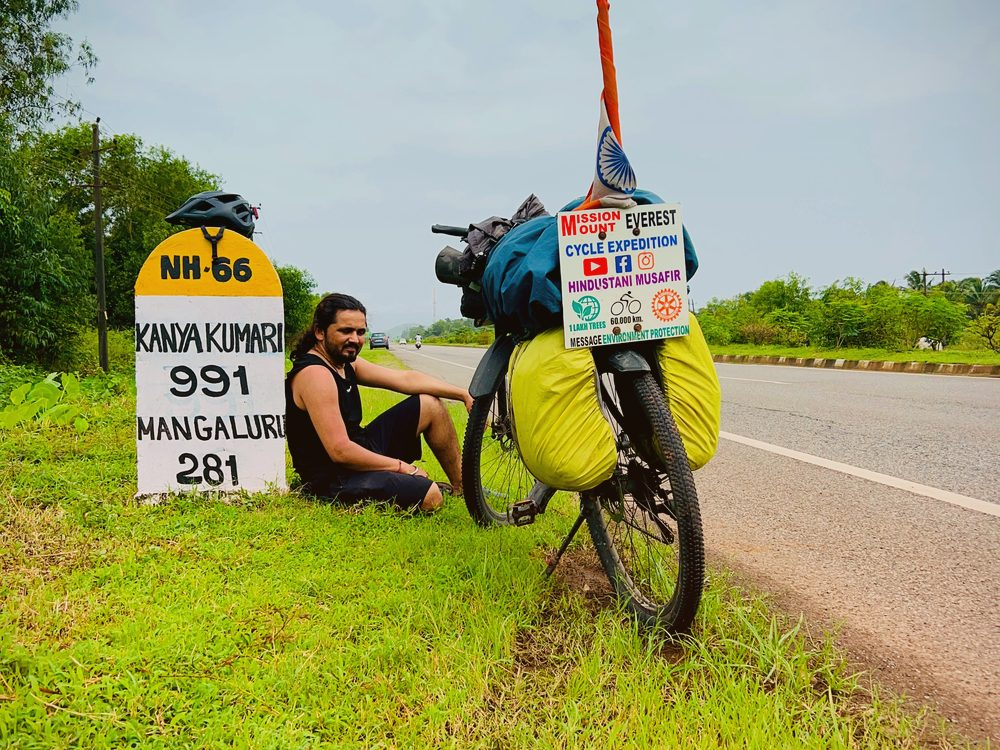
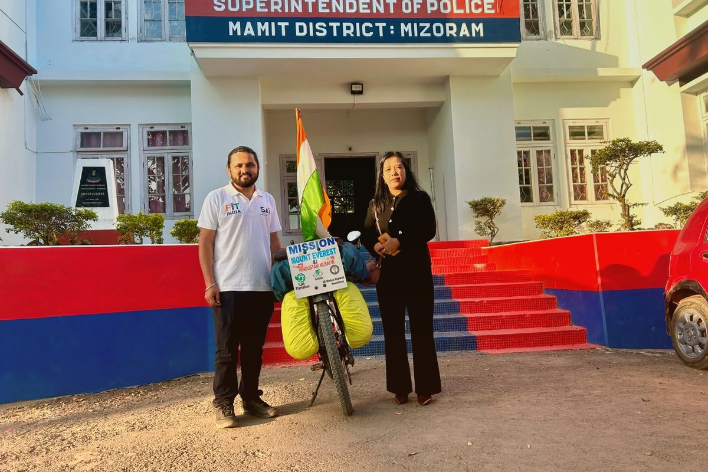

Shakti Sankalp Safar: 60,000+ KM solo cycling for a Greener India.
Meet Pappu Ram Choudhary — Hindustani Musafir — the “Oxygen Man of India,” pedalling solo across every state and union territory to fight climate change, road indiscipline and addiction among India’s youth. Founder of the OxyHunger Foundation, he leads the movement jointly with Co-Founder Subodh Vijay Gangurde.
 🚴 Khardung La · en route
🚴 Khardung La · en route
One cyclist. One mission. A nation of impact.

Gateway of India · Shakti Sankalp SafarA Rajasthan farmer’s son, pedalling a message no speech could carry.
Pappu Ram Choudhary hails from Khimsar village in Rajasthan’s Nagaur district. On 25 April 2023 he set out alone, on a bicycle, with a target of 60,000+ kilometres across every Indian state and union territory — carrying a single message: plant trees, ride safe, stay drug-free. Today he is recognised as the “Oxygen Man of India” and the founder of the OxyHunger Foundation, with a tree-planting pledge that has already crossed 35,000+ saplings. He now trains, quite literally on the road, for his most ambitious chapter yet — Mission Everest 2027.
- Solo, self-supported cycling across 28 states & 6 union territories since April 2023
- Pledged to plant 1,00,000 indigenous trees along the route
- Engages students in road safety & anti-addiction talks at every stop
- Movement co-led by Founder Pappu Ram Choudhary and Co-Founder Subodh Vijay Gangurde
Three pillars, one 60,000 km road
Every kilometre of Shakti Sankalp Safar is built around a purpose greater than distance.

Environmental Conservation
Planting Neem, Peepal and Banyan saplings in schools, villages and highways to restore India’s green cover, one stretch of road at a time.

Drug-Free Youth
Campus talks and community sessions steering young India away from addiction and toward discipline, purpose and physical fitness.

Physical Fitness & Discipline
60,000+ km of solo endurance cycling as living proof that consistency and willpower can carry an ordinary Indian to extraordinary places.
Deep into the Northeast — Manipur, Nagaland, Mizoram, Sikkim.
The most demanding leg of the Safar yet: sensitive border routes through Imphal–Mao, landslide-prone stretches in Sikkim, and honours from the Governor of Nagaland, the Indian Army, Assam Rifles and the CRPF along the way.
From the plains of Rajasthan to the roof of the world.
In 2027, Pappu plans to trade his cycle for crampons and take India’s environmental message to the summit of Mount Everest — hoisting the Tricolour at 8,849 metres.
See the Expedition Altitude & ridge training
Altitude & ridge training
Be part of the next stretch of road.
Sponsor a plantation drive, host a school session, or simply cheer him past your city.